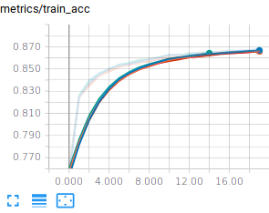
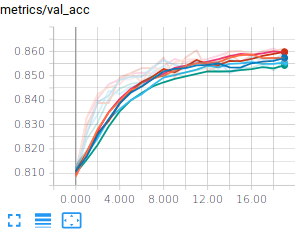
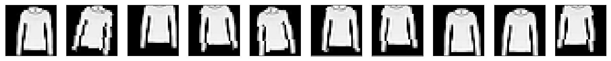
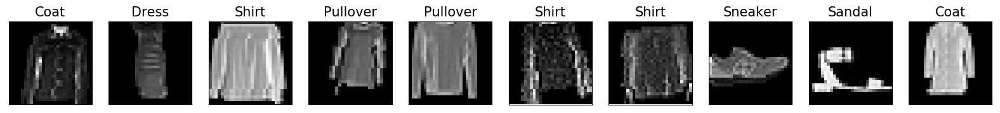

import torch
import torchvision
import torchvision.transforms as transforms
import os.path
############################################################################################ Datasets
dataset_dir = os.path.join(os.path.expanduser("~"), 'Datasets', 'FashionMNIST')
valid_ratio = 0.2 # Going to use 80%/20% split for train/valid
# Load the dataset for the training/validation sets
train_valid_dataset = torchvision.datasets.FashionMNIST(root=dataset_dir,
train=True,
transform= None, #transforms.ToTensor(),
download=True)
# Split it into training and validation sets
nb_train = int((1.0 - valid_ratio) * len(train_valid_dataset))
nb_valid = int(valid_ratio * len(train_valid_dataset))
train_dataset, valid_dataset = torch.utils.data.dataset.random_split(train_valid_dataset, [nb_train, nb_valid])
# Load the test set
test_dataset = torchvision.datasets.FashionMNIST(root=dataset_dir,
transform= None, #transforms.ToTensor(),
train=False)First steps in PyTorch : classifying fashion objects (FashionMNIST)
Keywords
PyTorch tutorial, FashionMNIST
Deep learning lectures © 2018 by Jeremy Fix is licensed under CC BY-NC-SA 4.0


Objectives
Forenote The pytorch tutorial is more complicated than the Keras tutorial because the interface is less high level. The Pytorch code is therefore more verbose but at the same time we better see low levels features that would eventually allow you to define custom elements.
In this practical, we will make our first steps with PyTorch and train our first models for classifying the fashion dataset of zalando which is made of :
- 60000 28x28 grayscale images in the training set
- 10000 28x28 grayscale images in the test set
- belonging to 10 classes (Tshirt, Trouser, Pullover, Dress, Coat, Sandal, Shift, Sneaker, Bag, Ankle boot)
It should be noted that this dataset has been devised in order to replace the traditional MNIST dataset which is by far too easy now (a simple CNN can reach a test accuracy higher than 99.5%). We may have used MNIST for this introductory practical but well … let us have fun with fashion, why not ?!
As you enter the universe of Pytorch, you might be interested in looking at dedicated pytorch tutorials.
The models you will train are :
- a linear classifier (logistic regression)
- a fully connected neural network with two hidden layers
- a vanilla convolutional neural network (i.e. a LeNet like convnet)
- some fancier architectures (e.g. ConvNets without fully connected layers)
As we progress within this tutorial, you will also see some syntactic elements of PyTorch to :
- load the datasets,
- define the architecture, loss, optimizer,
- save/load a model and evaluate its performances
- monitor the training progress by interfacing with a dedicated web server
Important
VERY VERY Important: Below, we see together step by step how to set up our training script. While reading the following lines you will progressively fill in python script. We also see the modules to be imported only when these are required for the presentation. But obviously, it is clearer to put these imports at the beginning of your scripts. So the following python codes should not be strictly copy-pasted on the fly.
Having a running python interpreter with the required modules
For making the labs, I propose the following way to work :
- for the CentraleSupelec students, you can edit your code on the labs machines, and run it directly on the GPUs. Your home directory is a network home so that any modifications you do locally are seen from the GPUs,
- for SM20 lifelong trainees, you can edit and run your code within the jupyter lab
- for masters students (AVR, PSA), you can edit and run your code within the jupyter lab or, for experienced users, edit your code with VIM within a ssh session
To connect to the GPUs, use one of the procedures described in Using the CentraleSupelec GPUs.
You should now have at your disposal a python interpreter with the installed package, i.e. the following should work successfully :
sh11:~:mylogin$ python3 -c "import torch" If the above fails, stop here and ask me, I’ll be glad to help you.
Working with datasets : datasets, dataloaders, transforms
A torch.utils.data.dataset is an object which provides a set of data accessed with the operator[ ]. Pytorch already inherits dataset within the torchvision module for for classical image datasets.
In this pratical, we will be working on the FashionMNIST. Let us discuss what we need to do with our dataset. Obviously, we need to load the data and FashionMNIST provides a training set and a test set (train flag in the FashionMNIST constructor). In order to latter perform early stopping, we need to split the training set in a training set and validation set, which will be done by calling random_split.
When running this script on the GPU of CentraleSupélec, you may encounter a timeout issue which is due to the way our GPUs connect to internet via a proxy. If this is the case, have a look to the FAQ.
Note
We could have used the “transform” argument of the FashionMNIST constructor. However, given the way these objects are defined in PyTorch, this would enforce to use exactly the same transforms for both the training and validation sets which is too constraining (think about adding dataset transformation to the training set and not the validation set).
We now need to convert the PIL images into Pytorch tensors, a simple call to torchvision.transforms.ToTensor() will do the job for now. Later on, we will add other transforms in the pipeline (e.g. dataset normalization and dataset augmentation) and I would like to already define the code which later will make inserting new transforms easy. I propose to do it the following way :
class DatasetTransformer(torch.utils.data.Dataset):
def __init__(self, base_dataset, transform):
self.base_dataset = base_dataset
self.transform = transform
def __getitem__(self, index):
img, target = self.base_dataset[index]
return self.transform(img), target
def __len__(self):
return len(self.base_dataset)
train_dataset = DatasetTransformer(train_dataset, transforms.ToTensor())
valid_dataset = DatasetTransformer(valid_dataset, transforms.ToTensor())
test_dataset = DatasetTransformer(test_dataset , transforms.ToTensor())Now that we get our datasets, we need to define DataLoader s that will allow us to iterate over the eventually shuffled sets, creating minibatches on the fly. Preparing the mini batches is performed in a parallel way, ensure to set num_threads to an appropriate values depending on your setup (the lscpu command will give that information). Parallel processing of the mini batches really has an impact and can actually be a limiting factor. To give you an idea, when preparing this tutorial, switching from 1 to 8 workers on a 8 cores machine changed the running time of a single epoch from 8s down to 2s.
############################################################################################ Dataloaders
num_threads = 4 # Loading the dataset is using 4 CPU threads
batch_size = 128 # Using minibatches of 128 samples
train_loader = torch.utils.data.DataLoader(dataset=train_dataset,
batch_size=batch_size,
shuffle=True, # <-- this reshuffles the data at every epoch
num_workers=num_threads)
valid_loader = torch.utils.data.DataLoader(dataset=valid_dataset,
batch_size=batch_size,
shuffle=False,
num_workers=num_threads)
test_loader = torch.utils.data.DataLoader(dataset=test_dataset,
batch_size=batch_size,
shuffle=False,
num_workers=num_threads)
print("The train set contains {} images, in {} batches".format(len(train_loader.dataset), len(train_loader)))
print("The validation set contains {} images, in {} batches".format(len(valid_loader.dataset), len(valid_loader)))
print("The test set contains {} images, in {} batches".format(len(test_loader.dataset), len(test_loader)))This should print out :
The train set contains 48000 images, in 375 batches
The validation set contains 12000 images, in 94 batches
The test set contains 10000 images, in 79 batchesWe display below an excerpt of the dataset with the associated labels.

As a matter of interest, the image above has been generated with the following code :
import matplotlib.pyplot as plt
import matplotlib.cm as cm
nsamples=10
classes_names = ['T-shirt/top', 'Trouser', 'Pullover', 'Dress', 'Coat', 'Sandal','Shirt', 'Sneaker', 'Bag', 'Ankle boot']
imgs, labels = next(iter(train_loader))
fig=plt.figure(figsize=(20,5),facecolor='w')
for i in range(nsamples):
ax = plt.subplot(1,nsamples, i+1)
plt.imshow(imgs[i, 0, :, :], vmin=0, vmax=1.0, cmap=cm.gray)
ax.set_title("{}".format(classes_names[labels[i]]), fontsize=15)
ax.get_xaxis().set_visible(False)
ax.get_yaxis().set_visible(False)
plt.savefig('fashionMNIST_samples.png', bbox_inches='tight')
plt.show()A Linear classifier
Before training deep neural networks, it is good to get an idea of the performances of a simple linear classifier. So we will define and train a linear classifier and see together how this is written in Python/PyTorch.
Building the network
Neural network module for computing the class scores
We consider a linear classifier, i.e. we perform logistic regression. As a reminder, in logistic regression, given an input image \(x \in \mathbb{R}^{28\times 28}\), we compute scores for each class k as \(w_k^T x\) (in this notation, the input is supposed to be extended with a constant dimension equal to 1 to take into account the bias), that we pass through the softmax transfer function to get probabilities over the classes :
\[P(y=k / x) = \frac{e^{w_k^T x}}{\sum_{j=0}^{9} e^{w_j^T x}}\]
In Pytorch, it is good practice to define your own class for your model by subclassing torch.nn.Module which provides already a bunch of useful methods. Subclassing the Module class usually consists only in redefining the constructor and the forward method. Hereafter is a proposed implementation explained below.
Note
We could have defined our model by simply calling the torch.nn.Sequential function but this works only for the very specific case of a …. sequence of layers and we aimed in this tutorial not to restrict our presentation of the syntax to this very specific use case.
import torch.nn as nn
class LinearNet(nn.Module):
def __init__(self, input_size, num_classes):
super(LinearNet, self).__init__()
self.input_size = input_size
self.classifier = nn.Linear(self.input_size, num_classes)
def forward(self, x):
x = x.view(x.size()[0], -1)
y = self.classifier(x)
return y
model = LinearNet(1*28*28, 10)
use_gpu = torch.cuda.is_available()
if use_gpu:
device = torch.device('cuda')
else:
device = torch.device('cpu')
model.to(device)
Note
We could have ended the forward function by calling the softmax function but there is the all-in-one efficient CrossEntropy loss expecting the scores and not the probabilities.
I suppose the piece of code above requires some further explanation. The code above is going to compute the scores for each classes. In the constructor, we simply instantiate a torch.nn.Linear object which is hosting the weights (a matrix of size (10, 784)) and the biases (a vector of size (10,)). Now, in the forward function, we start by reshaping our inputs from images to vectors before applying the linear transformation. Below is an example to better understand torch.Tensor.view
>>> import torch
>>> a = torch.randn(128, 1, 28, 28)
>>> print(a.size())
torch.Size([128, 1, 28, 28]);
>>> av = a.view(a.size()[0], -1)
>>> print(av.size())
torch.Size([128, 784])The “-1” in the call of view means “whatever is necessary so that the other dimensions are ok.”. In this particular example, we enforce the first dimension to be 128 so PyTorch is computing that the dimension with “-1” should actually be \(1\times 28 \times 28 = 784\).
If you wonder about the initialization of the parameters (and you would be right!), you can have a look in the source code of torch.nn.Linear to see that both the weights and biases are initialized with a uniform distribution \(\mathcal{U}(-\frac{1}{\sqrt{fan_{in}}},\frac{1}{\sqrt{fan_{in}}})\). If you want to experiment with different initialization schemes, you can invoke the torch.nn.Module.apply function. Check the documentation for an example use case.
Instantiating The Cross entropy loss
As we saw in the lecture, multiclass logistic regression with the cross entropy loss function is convex which is very nice from an optimization perspective : local minima are all global minima. Pytorch provides the torch.nn.CrossEntropyLoss() object which computes the softmax followed by the cross entropy.
Let us see this in action by considering a 3-class problem. Let us take an input, of true class y=1, being assigned the scores \(\hat{z} = [-100, 10, 8]\), i.e. the assigned probabilities being \(\hat{y} = [\frac{\exp(-100)}{\sum_i \exp(y_i)}, \frac{\exp(10)}{\sum_i \exp(y_i)}, \frac{\exp(8)}{\sum_i \exp(y_i)}] = [0.0000, 0.8808, 0.1192]\) the cross entropy loss is given by \(- \log(\hat{y}_y) = -\log(0.8808) \approx 0.1269\) and is computed in Pytorch as :
f_loss = torch.nn.CrossEntropyLoss()
f_loss(torch.Tensor([[-100, 10, 8]]), torch.LongTensor([1]))
# This prints : torch.Tensor(0.1269)For now, back to our experiment, we just need to instantiate the loss :
f_loss = torch.nn.CrossEntropyLoss()Instantiating the optimizer
As you know, optimizing the parameters of our neural network is performed by some kind of gradient descent. There are several optimizers provided in the torch.optim package. We will use the Adam optimizer; To know more about optimizers, there is a compendium of optimizers provided by Sebastian Ruder. In Pytorch, the optimizer needs a reference to the parameters that it needs to modifies.
optimizer = torch.optim.Adam(model.parameters())Training and testing the network
Training our model means iterating over the mini batches of the training set and, for each mini-batch, computing the forward and backward passes to ultimately provide the optimizer the gradient from which it can compute an update of the parameters.
Below is a proposal for a train function that you must read, copy and understand.
def train(model, loader, f_loss, optimizer, device):
"""
Train a model for one epoch, iterating over the loader
using the f_loss to compute the loss and the optimizer
to update the parameters of the model.
Arguments :
model -- A torch.nn.Module object
loader -- A torch.utils.data.DataLoader
f_loss -- The loss function, i.e. a loss Module
optimizer -- A torch.optim.Optimzer object
device -- a torch.device class specifying the device
used for computation
Returns :
"""
# We enter train mode. This is useless for the linear model
# but is important for layers such as dropout, batchnorm, ...
model.train()
for i, (inputs, targets) in enumerate(loader):
inputs, targets = inputs.to(device), targets.to(device)
# Compute the forward pass through the network up to the loss
outputs = model(inputs)
loss = f_loss(outputs, targets)
# Backward and optimize
optimizer.zero_grad()
loss.backward()
optimizer.step()
# An example of calling train to learn over 10 epochs of the training set
for i in range(10):
train(model, train_loader, f_loss, optimizer, device)For testing the network, we define a test function which computes our metrics of interest. There are no built-in metrics in pytorch. In the following code, what might be surprising is the with statement and the call to model.eval(). The python with statement is used to invoke a piece of code within a context, here the context of the torch.no_grad() object. This disables any gradient computation therefore improving the performances. The second statement is the model.eval which indicates to all the modules to switch into evaluation mode (layers such as Batch Normalization layers behave differently in training or inference modes).
def test(model, loader, f_loss, device):
"""
Test a model by iterating over the loader
Arguments :
model -- A torch.nn.Module object
loader -- A torch.utils.data.DataLoader
f_loss -- The loss function, i.e. a loss Module
device -- The device to use for computation
Returns :
A tuple with the mean loss and mean accuracy
"""
# We disable gradient computation which speeds up the computation
# and reduces the memory usage
with torch.no_grad():
# We enter evaluation mode. This is useless for the linear model
# but is important with layers such as dropout, batchnorm, ..
model.eval()
N = 0
tot_loss, correct = 0.0, 0.0
for i, (inputs, targets) in enumerate(loader):
# We got a minibatch from the loader within inputs and targets
# With a mini batch size of 128, we have the following shapes
# inputs is of shape (128, 1, 28, 28)
# targets is of shape (128)
# We need to copy the data on the GPU if we use one
inputs, targets = inputs.to(device), targets.to(device)
# Compute the forward pass, i.e. the scores for each input image
outputs = model(inputs)
# We accumulate the exact number of processed samples
N += inputs.shape[0]
# We accumulate the loss considering
# The multipliation by inputs.shape[0] is due to the fact
# that our loss criterion is averaging over its samples
tot_loss += inputs.shape[0] * f_loss(outputs, targets).item()
# For the accuracy, we compute the labels for each input image
# Be carefull, the model is outputing scores and not the probabilities
# But given the softmax is not altering the rank of its input scores
# we can compute the label by argmaxing directly the scores
predicted_targets = outputs.argmax(dim=1)
correct += (predicted_targets == targets).sum().item()
return tot_loss/N, correct/NWe are now ready to setup our training/evaluation loop where we will be training on the training set and after every epoch display our metrics on the validation set (here, we will evaluate on the test set only at the very end, when the best model would have been selected to prevent us from making any kind of decision based on the test set metrics).
for t in range(epochs):
print("Epoch {}".format(t))
train(model, train_loader, f_loss, optimizer, device)
val_loss, val_acc = test(model, valid_loader, f_loss, device)
print(" Validation : Loss : {:.4f}, Acc : {:.4f}".format(val_loss, val_acc))We here used 20% of the training set for validation purpose. This is based on the validation loss that we should select our best model, we will see in a few moment how to automatically save the best model during training.
You are now ready for executing your first training. Being logged on the GPU node,
python3 train_fashion_mnist_linear.pyThis is your first trained classifier with Pytorch. You may reach a validation accuracy of something around 85% after about 5 epochs.
Exercice Modify the train function in order to accumulate the number of correctly classified samples during iterating over the training set. You can then display the training loss and accuracies nicely during training. Try the code below to see what I mean.
import sys
import random
import time
def progress(loss, acc):
sys.stdout.write('Loss : {:2.4f}, Acc : {:2.4f}\r'.format(loss, acc))
sys.stdout.flush()
for i in range(10):
progress(random.random(), random.random())
time.sleep(0.5)
sys.stdout.write('\n')If you prefer, you could also make use of progress bars as in https://github.com/kuangliu/pytorch-cifar/blob/master/utils.py or of some dedicated progressbar packages
Saving/Loading the best model
Saving
When training a model, as we saw during the lecture, we are not so much interested in saving the model which is minimizing the loss on the training set. Rather than keeping the model minimizing the empirical risk, we want to keep as best model the one minimizing the real risk or an estimation of it. Here, our real risk is being estimated on the validation set. Still, we want to do a little more than just saving the best model and here is my wishlist :
- every time the training script is executed, it should save its best model in a new directory
- the model minimizing the validation loss should be saved during the training
- the model could be loaded in a brand new script, not only in the training script (e.g. if normalization is applied to the dataset, the parameters of the normalization must also be saved)
For the first point, I provide you the following function.
import os
def generate_unique_logpath(logdir, raw_run_name):
i = 0
while(True):
run_name = raw_run_name + "_" + str(i)
log_path = os.path.join(logdir, run_name)
if not os.path.isdir(log_path):
return log_path
i = i + 1
###################################################
# Example usage :
# 1- create the directory "./logs" if it does not exist
top_logdir = "./logs"
if not os.path.exists(top_logdir):
os.mkdir(top_logdir)
# 2- We test the function by calling several times our function
logdir = generate_unique_logpath(top_logdir, "linear")
print("Logging to {}".format(logdir))
# -> Prints out Logging to ./logs/linear_0
if not os.path.exists(logdir):
os.mkdir(logdir)
logdir = generate_unique_logpath(top_logdir, "linear")
print("Logging to {}".format(logdir))
# -> Prints out Logging to ./logs/linear_1
if not os.path.exists(logdir):
os.mkdir(logdir)We now need to keep track of the validation loss and save the best model if it improves that metric. Up to my knowledge, there is nothing already provided within pytorch to perform this. I propose to define a class called ModelCheckpoint for this task :
class ModelCheckpoint:
def __init__(self, filepath, model):
self.min_loss = None
self.filepath = filepath
self.model = model
def update(self, loss):
if (self.min_loss is None) or (loss < self.min_loss):
print("Saving a better model")
torch.save(self.model.state_dict(), self.filepath)
#torch.save(self.model, self.filepath)
self.min_loss = loss
###########################################
# Example usage
# Define the callback object
model_checkpoint = ModelCheckpoint(logdir + "/best_model.pt", model)
# In the training loop
for t in range(epochs):
....
model_checkpoint.update(val_loss)Saving the model is done here by calling torch.save on model.state_dict() which is the recommended approach for saving the model. The state_dict function returns the parameters as well as the information like running averages that you have within batch normalization layers.
Modify your script to make use of the ModelCheckpoint object.
Loading
To load a saved model, you need to instantiate your model and to invoke the load_state_dict function. Below is an example script loading and testing the model.
model_path = THE_PATH_TO_YOUR_model.pt_FILE
model = LinearNet(1*28*28, 10)
model = model.to(device)
model.load_state_dict(torch.load(model_path))
# Switch to eval mode
model.eval()
test_loss, test_acc = test(model, test_loader, f_loss, device)
print(" Test : Loss : {:.4f}, Acc : {:.4f}".format(test_loss, test_acc))Dashboard for monitoring/comparing runs
We now turn to the question of monitoring one or several runs. You can choose betwen several options (Visdom, Trixi) but probably the most convenient is actually to rely on Tensorboard and pytorch now has a built-in tensorboard writer.
It requires to install tensorboard but it is definitely a convenient viewer. The basic idea of this viewer is to add few lines in your code which is dumping data on disk and to start the tensorboard server which is continuously browsing your disk for new data and provides a web server.
Let us fill in our scripts with the codes required to dump some information. Below is an example snippet of code to insert in your script.
Note
You can actually display much more information on a tensorboard (e.g. sending images, videos, audios, texts, histograms, precision/recall curves, …), you can check the pytorch tensorboard tutorial
from torch.utils.tensorboard import SummaryWriter
[...]
tensorboard_writer = SummaryWriter(log_dir = logdir)
[...]
for t in range(epochs):
[...]
tensorboard_writer.add_scalar('metrics/train_loss', train_loss, t)
tensorboard_writer.add_scalar('metrics/train_acc', train_acc, t)
tensorboard_writer.add_scalar('metrics/val_loss', val_loss, t)
tensorboard_writer.add_scalar('metrics/val_acc', val_acc, t)Now, each time you are running your training, you will see some “events.out.xxxxx” files created in your logdir. These files contain the logs and can be read with tensorboard.
Once this is done, you have to start tensorboard on the GPU and open the provided URL http://localhost:6006 with your browser.
[In one terminal on the GPU]
sh11:~:mylogin$ tensorboard --logdir ./logs
Starting TensorBoard b'47' at http://0.0.0.0:6006
(Press CTRL+C to quit)Once this is done, you will be able to monitor your metrics in the browser while the training is running.
You can now run several experiments, monitor them and get a copy of the best models. A handy bash command to run several experiments is given below :
sh11:~:mylogin$ for iter in $(seq 1 10); do echo ">>>> Run $iter" && python3 train_mnist_linear.py ; done;

You should reach a validation and test accuracy around 85% and this is rather consistent, but, remember, we have a convex optimization problem, so that we expect the trainings to be consistent. In case they would not be consistent, that would be an indication that your optimization problem is not well conditioned (e.g. your input data are not normalized). Fortunately (but unfortunately from a pedagogical point of view) the FashionMnist dataset is already normalized.
Saving a summary file of your run
If you want to test several models, meta-parameters and so one, it is good practice to dump all the necessary information of your run to know exactly in which condition it has been done.
Fortunately, the Pytorch objects usually overwrite the repr python function which provides a handy way to generate and save such a summary :
import sys
[....]
summary_file = open(logdir + "/summary.txt", 'w')
summary_text = """
Executed command
================
{}
Dataset
=======
FashionMNIST
Model summary
=============
{}
{} trainable parameters
Optimizer
========
{}
""".format(" ".join(sys.argv), model, sum(p.numel() for p in model.parameters() if p.requires_grad), optimizer)
summary_file.write(summary_text)
summary_file.close()
tensorboard_writer.add_text("Experiment summary", summary_text)The representation of the model provided by PyTorch does not list the number of parameters. You can have a look at https://stackoverflow.com/questions/42480111/model-summary-in-pytorch if you want to include this information in your summary. As you may see, we also added some information on the tensorboard in order to quickly check the parameters of the models.
Normalizing the input
So far, we used the raw data, which are not necessarily normalized. It is usually a good idea to normalize the input because it allows to make training faster (because the loss becomes more circular symmetric) and also allows to use a consistent learning rate and a consistent regularization factor for all the parameters in the architecture. It turns out that FashionMNIST is already kind of normalized so that what we are going to do in this section will not have a big impact on your training.
There are various ways to normalize the data and various ways to translate it into Keras. The point of normalization is to equalize the relative importance of the dimensions of the input. One normalization is min-max scaling just scaling the input by a constant factor, e.g. given an image I, you feed the network with I/255. - 0.5. Another normalization is standardization. Here, you compute the mean of the training vectors and their variance and normalize every input vector (even the test set) with these data. Given a set of training images \(X_i \in \mathbb{R}^{784}, i \in [0, N-1]\), and a vector \(X \in \mathbb{R}^{784}\) you feed the network with \(\hat{X} \in \mathbb{R}^{784}\) given by
\[X_\mu = \frac{1}{N} \sum_{i=0}^{N-1} X_i\]
\[X_\sigma = \sqrt{\frac{1}{N} \sum_{i=0}^{N-1} (X_i - X_\mu)^T (X_i - X_\mu)} + 10^{-5}\]
\[\hat{X} = (X - X_\mu)/X_\sigma\]
How do we introduce normalization in our Pytorch model ? One way is to create a dataset that is normalized and use this dataset for training and testing. Another possibility is to embed normalization in the network by introducing normalization within the forward method of your model. Below, we will see how to compute the mean and variance images and to introduce normalization in our DatasetTransformer objects. Important the statistics for normalization are to be computed on the training set and the same statistics should be used on the validation and test sets.
normalizing_dataset = DatasetTransformer(train_dataset, transforms.ToTensor())
normalizing_loader = torch.utils.data.DataLoader(dataset=normalizing_dataset,
batch_size=batch_size,
num_workers=num_threads)
# Compute mean and variance from the training set
mean_train_tensor, std_train_tensor = compute_mean_std(normalizing_loader)
data_transforms = transforms.Compose([
transforms.ToTensor(),
transforms.Lambda(lambda x: (x - mean_train_tensor)/std_train_tensor)
])
train_dataset = DatasetTransformer(train_dataset, data_transforms)
valid_dataset = DatasetTransformer(valid_dataset, data_transforms)
test_dataset = DatasetTransformer(test_dataset , data_transforms)with the following definition for compute_mean_std
def compute_mean_std(loader):
# Compute the mean over minibatches
mean_img = None
for imgs, _ in loader:
if mean_img is None:
mean_img = torch.zeros_like(imgs[0])
mean_img += imgs.sum(dim=0)
mean_img /= len(loader.dataset)
# Compute the std over minibatches
std_img = torch.zeros_like(mean_img)
for imgs, _ in loader:
std_img += ((imgs - mean_img)**2).sum(dim=0)
std_img /= len(loader.dataset)
std_img = torch.sqrt(std_img)
# Set the variance of pixels with no variance to 1
# Because there is no variance
# these pixels will anyway have no impact on the final decision
std_img[std_img == 0] = 1
return mean_img, std_imgA vanilla convolutional neural network
The MultiLayer Perceptron does not take any benefit from the intrinsic structure of the input space, here images. We propose in this paragraph to explore the performances of Convolutional Neural Networks (CNN) which exploit that structure. Our first experiment with CNN will consider a vanilla CNN, i.e. a stack of conv-relu-maxpooling layers followed by some dense layers.
In order to write our script from training CNN, compared to the script for training a linear or a multilayer feedforward model, we need to change the input_shape and also introduce new layers: torch.nn.Conv2d layers, torch.nn Pooling layers .
The tensors for convolutional layers are 4D which include batch_size, number of channels, image width, image height. The ordering is framework dependent. It can be :
- channels_last (tensorflow convention), in which case, the tensors are (batch_size, image height, image width, number of channels)
- channels_first (theano convention), in which case, the tensors are (batch_size, number of channels, image height, image width)
The next step is to define our model. We here consider stacking Conv-Relu-MaxPool layers. In PyTorch, from an input of 16 channels, one block with 32 \(5\times 5\) stride 1 filters and \(2\times 2\) stride 2 max pooling would be defined with the following syntax :
import torch.nn as nn
conv_classifier = nn.Sequential(
nn.Conv2d(16, 32,
kernel_size=5,
stride=1,
padding=2, bias=True),
nn.ReLU(inplace=True),
nn.MaxPool2d(kernel_size=2, stride=2))The padding argument of the convolution is ensuring that the convolution will not decrease the size of the representation. We let this as the job of the max-pooling operation. Indeed, the max pooling layer has a stride 2 which effectively downscale the representation by a size of 2.
How do you set up the architecture ? the size of the filters ? the number of blocks ? the stride ? the padding ? well, this is all the magic. Actually, we begin to see a small part of the large number of degrees of freedom on which we can play to define a convolutional neural network.
The last thing we need to speek about is the flattening we need to operate before going through the eventual last dense layers. Usually (but this is not always the case), there are some final fully connected (dense) layers at the end of the architecture. When you go from the Conv/MaxPooling layers to the final fully connected layers, you need to flatten your feature maps because linear layers expect an input which is a vector, not a matrix. This means converting the 4D Tensors to 2D Tensors. For example, the code below illustrates the connection between some convolutional/max-pooling layers to the output layer with a 10-class classification:
# Given x of size (128, 16, 28, 28)
x = torch.randn(128, 16, 28, 28)
features = conv_classifier(x)
print(features.shape)
# -> prints out (128, 32, 14, 14)
flatten_features = features.view(features.size()[0], -1)
print(flatten_features.shape)
# -> prints out (128, 6272)And then you can go on feeding your flatten features within linear layers. Now, we should have introduced all the required blocks. As a first try, I propose you to code a network with :
- The input layer
- 3 consecutive blocks with Conv(\(5\times 5\), strides=1, padding=2)-Relu-MaxPooling(\(2\times 2\), strides=2). Take 16 filters for the first Conv layer, 32 filters for the second and 64 for the third
- Two dropout-linear-relu blocks of size 128 and 64, with 0.5 dropout probability (try also without the dropout, you should observe overfitting)
- One dense layer with 10 units
The last layer is linear but I remind you that the softmax is embedded within the loss function. Training this architecture, you should end up with around 92% of validation and test accuracies with losses around 0.22. By the way, a loss of 0.22 means that, in average, your model is assigning the correct class a probability around 80% (remember the cross entropy loss for a single sample is \(-\log(\hat{y}_y))\).
Small kernels, no fully connected layers, Dataset Augmentation, Model averaging
Architecture
Recently, it is suggested to use small convolutional kernels (typically \(3\times 3\), and sometimes \(5\times 5\)). The rationale is that using two stacked \(3\times 3\) convolutional layers gives you receptive field size of \(5\times 5\) with less parameters (and more non linearity). This is for example the guideline used in VGG : use mostly \(3\times 3\) kernels, stack two of them, followed by a maxpool and then double the number of filters. The number of filters is usually increased as we go deeper in the network (because we expect the low level layers to extract basic features that are combined in the deeper layers). Finally, in (Lin, Chen, & Yan, 2013), it is also suggested that we can completly remove the final fully connected layers and replace them by global average pooling which is basically average pooling with a kernel of the same size (width,height) as the feature map. It appears that removing fully connected layers, the network is less likely to overfit and you end up with much less parameters for a network of a given depth (this is the fully connected layers that usually contain most of your parameters). Therefore, I suggest you to give a try to the following architecture :
- InputLayer
- 64C3s1-BN-Relu-64C3s1-BN-Relu - MaxPool2s2
- 128C3s1-BN-Relu-128C3s1-BN-Relu - MaxPool2s2
- 256C3s1-BN-Relu-256C3s1-BN-Relu - GlobalAverage(RF size 7)
- Dense(10), (Softmax<– included in the loss)
where 64C3s1 denotes a convolutional layer with 64 kernels, of size \(3\times 3\), with stride 1, with zero padding to keep the same size for the input and output. BN is a torch.nn.BatchNorm2d layer . MaxPool2s2 is a max-pooling layer with receptive field size \(2\times 2\) and stride 2. GlobalAverage is an averaging layer computing an average over a whole feature map. The input of the global average layer being 256 feature maps of size \(7\times 7\), its output is 256 features. For regularizing, you may want to try adding weight_decay when creating torch.optim.Adam optimizer (try values around \(10^{-6} - 10^{-4}\)), or introduce dropout layers between the convolutional stage and the linear layer.
This should bring you with, after 50 epoch, a test accuracy around 93%, a test loss around 0.27, with 1M trainable parameters.
Dataset Augmentation and model averaging
One process which can bring you improvements is Dataset Augmentation. The basic idea is to apply transformations to your input images that must keep invariant your label. For example, slightly rotating, translating an image of, say, a pullover is still an image of a pullover as shown below :

And the same applies for other classes as well :

Now, the idea is to produce a stream (actually infinite if you allow continuous perturbations) of training samples generated from your finite set of training samples. Transformation of images can be performed by composing and calling functions in torchvision.transforms. These functions work on PIL images. For example, I show you below how I would perform some random transformations on an image “toto.png”
# An example code calling transforms on PIL images
from PIL import Image, ImageFilter
import torchvision.transforms as transforms
# Read image
im = Image.open( 'hulk.png' )
transform_image = transforms.Compose([
transforms.RandomHorizontalFlip(0.5),
transforms.RandomAffine(degrees=10, translate=(0.2, 0.2))
])
for i in range(3):
t_im = transform_image(im)
t_im.save("hulk-{}.png".format(i))
t_im.show()Now, to introduce this into our training script, remember when we created our datasets :
train_dataset = DatasetTransformer(train_dataset, transforms.ToTensor())
valid_dataset = DatasetTransformer(valid_dataset, transforms.ToTensor())
test_dataset = DatasetTransformer(test_dataset , transforms.ToTensor())The last argument of DatasetTransformer is actually expecting a function which is applied to every sample. In the case above, it was simply transforming the PIL image into a Pytorch tensor. Now, we will do a little bit more :
import torch.transforms as transforms
train_augment_transforms = transforms.Compose([
transforms.RandomHorizontalFlip(0.5),
transforms.RandomAffine(degrees=10, translate=(0.1, 0.1)),
transforms.ToTensor()
])
train_dataset = DatasetTransformer(train_dataset, train_augment_transforms)With the fancy CNN and dataset augmentation, you should be getting around 93% accuracy on the test set with a test loss around 0.2;
Now, as a final step in our beginner tutorial on pytorch, you can train several models and average their probability predictions over the test set. This will eventually bring you an additional point in your accuracy. For example, I trained 6 fancy CNN with the best settings I found (weight decay of \(10^{-6}\), data augmentation) and then build a model which is outputing the average probability assigned by each model. This led me to a test loss of 0.1510 and a test accuracy of 94.59%
Individual performances :
[./logs/fancyCNN_38] Test : Loss : 0.1895, Acc : 0.9352
[./logs/fancyCNN_39] Test : Loss : 0.1878, Acc : 0.9373
[./logs/fancyCNN_40] Test : Loss : 0.1920, Acc : 0.9352
[./logs/fancyCNN_41] Test : Loss : 0.1881, Acc : 0.9399
[./logs/fancyCNN_42] Test : Loss : 0.1964, Acc : 0.9357
[./logs/fancyCNN_43] Test : Loss : 0.1962, Acc : 0.9362
==============================
Averaged model :
Test : Loss : 0.1510, Acc : 0.9459A possible solution
You will find a possible solution, with a little bit more than what we have seen in this practical in the LabsSolutions/00-pytorch-FashionMNIST directory.
References
Lin, M., Chen, Q., & Yan, S. (2013). Network in network. arXiv. Retrieved from https://arxiv.org/abs/1312.4400
Srivastava, N., Hinton, G. E., Krizhevsky, A., Sutskever, I., & Salakhutdinov, R. (2014). Dropout: A simple way to prevent neural networks from overfitting. Journal of Machine Learning Research, 15(1), 1929–1958. Retrieved from http://dl.acm.org/citation.cfm?id=2670313